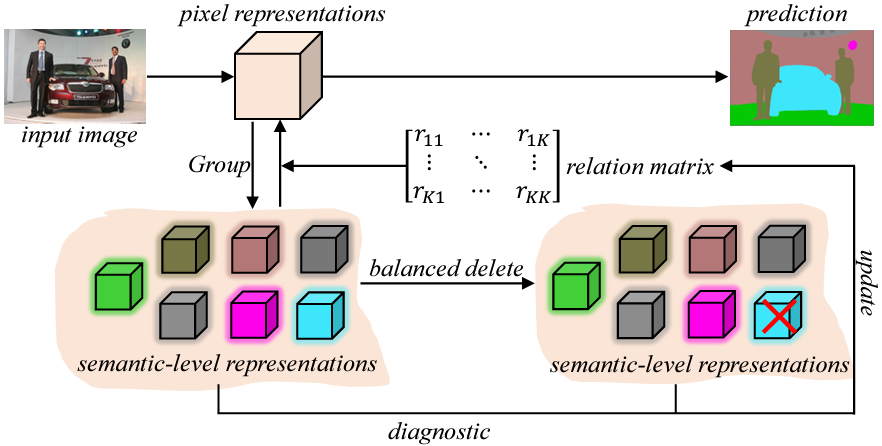
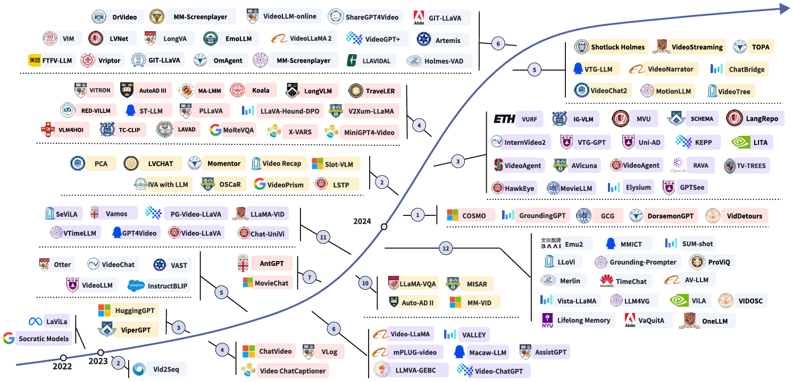
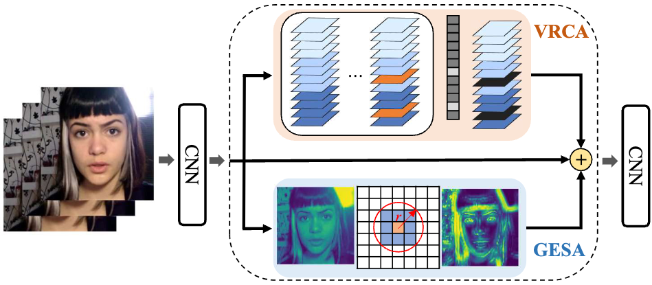
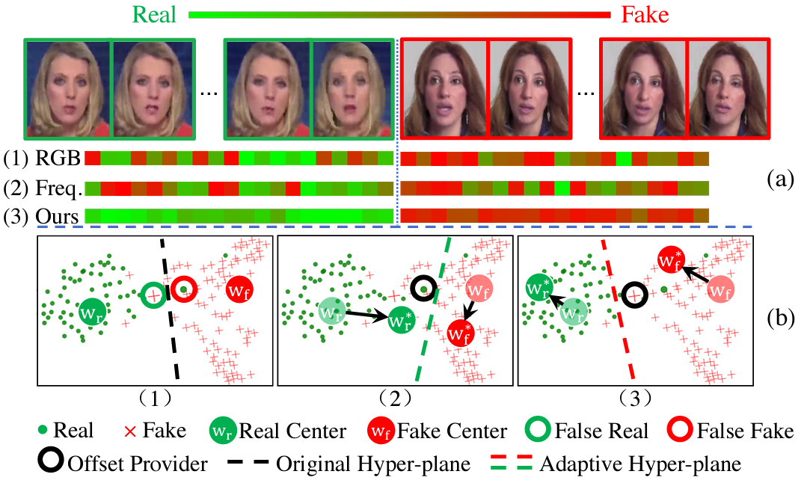
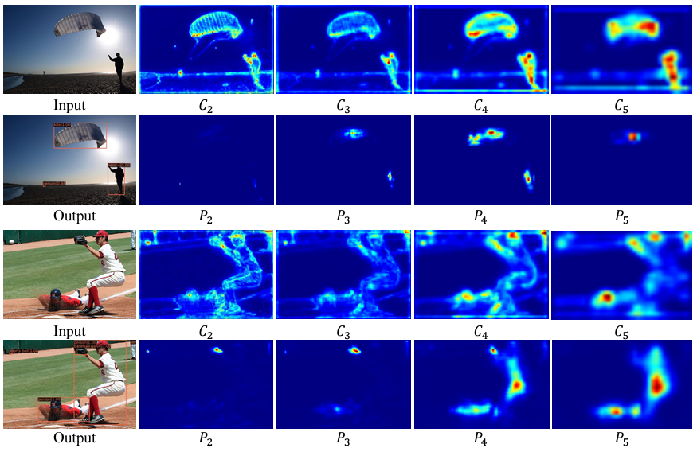
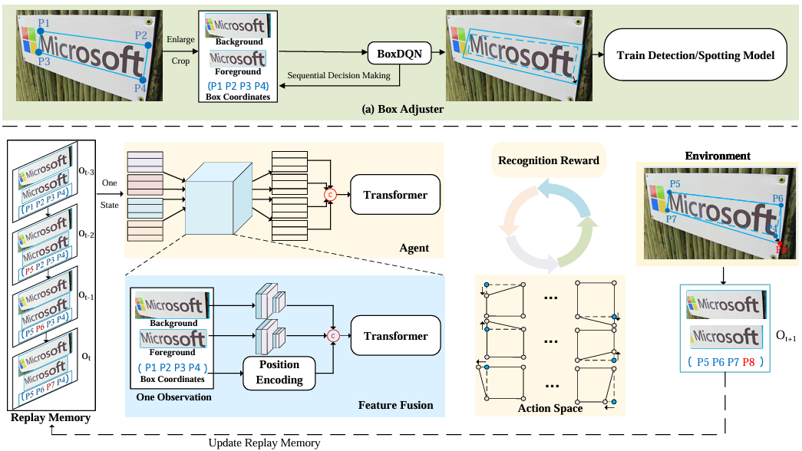

|
I am a third-year Ph.D. student in the Computer Science Department at the University of Rochester (UofR). My advisor is Prof. Chenliang Xu. Before that, I received my master and bachelor degree from University of Science and Technology of China (USTC) under the supervision of Prof. Nenghai Yu and Prof. Bin Liu. I am focusing on human related topic (e.g. face animation and stylization, 3D face reconstruction, deepfake detection e.t.c.). And I also working on the egocentric video understanding, object detection/segmentation and optical character recognition (OCR). Insead of research, I often mountaineering and have summitted the Muztagh Ata and Chola mountains. Email / Google Scholar / Github / Linkedin |
|
| [05/2025] | Our workshop on DeepFake detection (with Ant-Group) will be presented on @ IJCAI 2025! |
| [04/2025] | Two paper are accepted by @ Siggraph 2025 and @ CVPR 2025 (Highlight) ! |
| [11/2024] | Some of my works about face synthesis are posted by University of Rochester News . |
| [11/2024] | A new paper "Gaussian Head Avatar via StyleGAN" is accepted by @ 3DV 2025 ! |
| [07/2024] | Invited tutorial talk on Multimedia Deepfake Detection @ ICME 2024. |
| [05/2024] | I will be joining Adobe Research for internship, work with Dr. Yang Zhou. |

|
Luchuan Song, Yang Zhou, Zhan Xu, Yi Zhou, Deepali Aneja, Chenliang Xu Siggraph, 2025 project page / paper / code We propose StreamME, a method focuses on fast head reconstruction. It synchronously records/reconstructs head from live video streams without any pre-cached data. |

|
Fa-Ting Hong, Zhan Xu, Haiyang Liu, Qinjie Lin, Luchuan Song, Zhixin Shu, Yang Zhou, Duygu Ceylan, Dan Xu CVPR, 2025 (Highlight) project page / paper / code We propose a novel adaptive reference selection diffusion network for free-viewpoint human animation, enabling flexible human framing and versatile camera shot planning without strict reliance on a specific reference image. |

|
Luchuan Song, Lele Chen, Celong Liu, Pinxin Liu, Chenliang Xu Siggraph Asia, 2024 project page / paper / code We present a method to generate a drivable toonified avatar. Given a monocular video and a written instruction about the avatar style, it can generate a toonified avatar that can be animated in real time. |

|
Luchuan Song, PinXin Liu, Lele Chen ,Guojun Yin, Chenliang Xu ECCV, 2024 project page / paper / code We attach the multi-combined tri-plane sturcture for monocular photo-realistic volumetric head avatar reconstructions. |

|
Luchuan Song, Pinxin Liu, Guojun Yin, Chenliang Xu ICASSP, 2024 paper / code / video We apply the mix-resolution images in one-shot talking head training. The resolution could achieve 512px from 256px in previous. |
|
Jing Bi, Yunlong Tang, Luchuan Song, Ali Vosoughi, Nguyen Nguyen, Chenliang Xu ACM'MM, 2024 paper / code We introduce the EAGLE (Egocentric AGgregated Language-video Engine) model and dataset for egocentric video understanding tasks. |
|
|  |
Zhenchao Jin, Xiaowei Hu, Lingting Zhu, Luchuan Song, Li Yuan, Lequan Yu NeurIPS, 2023 paper / code We leverage a deletion diagnostics procedure in image segmentation. |
|  |
Yunlong Tang, Jing Bi, Siting Xu, Luchuan Song, Susan Liang, Teng Wang, ..., Ping Luo, Jiebo Luo, Chenliang Xu Arxiv, 2023 paper / project page The comprehensive survey covers video understanding techniques powered by large language models (Vid-LLMs). |

|
Luchuan Song, Guojun Yin, Zhenchao Jin, Xiaoyi Dong, Chenliang Xu ICCV, 2023 paper / video We propose a method to implement the head movement of the listening head with expression. |
|  |
Luchuan Song, Xiaodan Li, Zheng Fang, Zhenchao Jin, YueFeng Chen, Chenliang Xu ACM'MM, 2022 paper / video / code We apply channel-wise & spatial-wise feature for Deepfake Detection. |
|  |
Luchuan Song, Zheng Fang, Xiaodan Li, Xiaoyi Dong, Zhenchao Jin, Yuefeng Chen, Siwei Lyu ECCV, 2022 paper / code We propose an case-adaptive softmax representation to solve the distribution fixation problem in Deepfake Detection. |
|  |
Zhenchao Jin, Dongdong Yu, Luchuan Song, Zehuan Yuan, Lequan Yu ECCV, 2022 paper / code We address the detection performance of large-scale objects are usually suppressed after introducing FPN. |
|  |
Jingqun Tang, Wenming Qian, Luchuan Song, Xiena Dong, Lan Li, Xiang Bai ECCV, 2022 paper We attach reinforcement learning (DQN) to adjust the bbox in OCR. |

|
Luchuan Song, Bin Liu, Guojun Yin, Xiaoyi Dong, Yufei Zhang, Jiaxuan Bai ACM'MM, 2021 paper / video We not only edit the appearance of the talking head, but also the voice. And we explored the relationship between the transfered voice features and lip-sync. |

|
Yinan He, Bei Gan, Siyu Chen, Yichun Zhou, Guojun Yin, Luchuan Song, Lu Sheng, Jing Shao, Ziwei Liu CVPR, 2021 (oral) paper / project page / code / video / dataset / challenge ForgeryNet is by far the largest publicly available deep face forgery dataset in terms of data-scale (2.9M images, 221,247 videos), manipulations and annotations. |
|
Adobe Research, Adobe, San Jose
Research Scientist Intern May 2024 - Dec. 2024 Mentor(s): Yang Zhou, Zhan Xu, Yi Zhou and Deepali Aneja |
|
|
Tencent YouTu Lab, Tencent, Shanghai
Research Scientist Intern Jan. 2021 - May 2021 Mentor(s): Hao Liu |
|
|
SenseTime Research, SenseTime, Shanghai
Research Scientist Intern Apr. 2020 - Dec. 2020 Mentor(s): Guojun Yin |
|
|
Ruitian Investment LLC, Shanghai
Quantitative Researcher Intern & FTE Quantitative Trader Sep. 2018 - May 2019 Job: Explore alpha trading strategies on A-shares (actual $200 million), develop automated factor search system |

|
University of Rochester, New York
Ph.D. in Computer Science Sep. 2022 - Present Advisor: Chenliang Xu |

|
University of Science and Technology of China, Hefei
B.Sc and M.Eng in EE Sep. 2014 - July 2021 Advisor: Nenghai Yu and Bin Liu |
|
This course covers much of the recent advances in machine learning and artificial intelligence have been dominated by neural network approaches broadly described as deep learning. Fundamentals of computer vision, including image formation, elements of human vision, low-level image processing, and pattern recognition techniques. This course mainly introduces the theories of source coding, channel coding and rate distortion. Other concepts, such as asymptotic equipartition property, entropy rate, and differential entropy, are also introduced. |
|
|